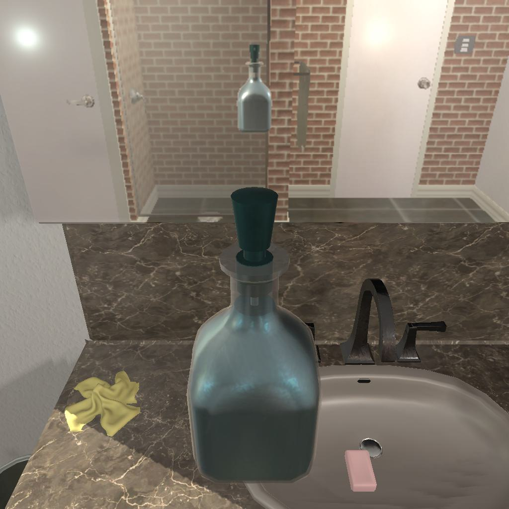

---------------------------------------------------------task: 27---------------------------------------------------------
--------------------------------------------------------------------------------------------------------------------------------------------------------------------
--------------------------------------------------------------------------------------------------------------------------------------------------------------------
Step:--------------------------------------------------------------------------18-------------------------------------------------------------------------------
----------------------------------------
VLM Prompt:
Image1:
Image2:
**Instruction**
1. Analyze the provided images to identify all visible household objects and compare the difference between images (e.h. whether the object is opened or not and taken on hand or not), focusing on those relevant to the task description "find two soapbottle and put them in garbagecan."
2. Use the analysis of images and the task hint "The agent must find an object of the desired type, pick it up, find the correct location to place it, put it down there, then look for another object of the desired type, pick it up, return to previous location, and put it down there with the other object." to answer the question: what is the most reasonable action in the choices for the task description "find two soapbottle and put them in garbagecan"?
3. Decide and write the answer using the template: The answer is: (i): , where i is the real number. If there is no desired object in images, search every place based on **Initial Observation** to find the object. And if no one is exactly correct, choose a similar answer.
**Initial Observation**
You are in the middle of a room. Looking quickly around you, you can see countertop (1), sinkbasin (1-2), sink (1-2), garbagecan (1), drawer (1-2), toilet (1), handtowelholder (1)
**Answer Choices**
(1): go to sink 1
(2): go to garbagecan 1
(3): go to drawer 1
(4): go to drawer 2
(5): go to sink 2
(6): go to sinkbasin 2
(7): go to toilet 1
(8): go to handtowelholder 1
(9): put soapbottle 2 in/on sinkbasin 1
(10): clean soapbottle 2 with sinkbasin 1
(11): clean soapbottle 2 with sink 1
(12): clean soapbottle 2 with sink 2
(13): clean soapbottle 2 with sinkbasin 2
(14): examine soapbottle 2
(15): examine sinkbasin 1
**Answer**
Let's think step by step by following the instructions.
----------------------------------------
----------------------------------------
Original Response:
First, we analyze the provided images. In both images, we can see a soap bottle on the countertop near the sink. There is no visible difference between the two images regarding the soap bottle; it is neither opened nor taken by hand in any of the images.
The task description is "find two soapbottle and put them in garbagecan." The task hint suggests that the agent must first find an object of the desired type (soap bottle) and then place it in the correct location (garbage can). Since we can see a soap bottle in the images and there is only one, the agent would first need to pick up this soap bottle and then look for another one.
Based on the initial observation, the garbagecan is mentioned, which is likely where the agent needs to place the soap bottles. However, since the agent needs to find two soap bottles and we only see one, the agent should first pick up the visible soap bottle before looking for another one.
The most reasonable action from the choices provided would be to first go to the visible soap bottle, which is on the countertop near the sink. The closest action that matches this description is (1): go to sink 1, where the soap bottle is located.
The answer is: (1): go to sink 1
----------------------------------------
----------------------------------------
>>> Refine Original VLM Response and Get Pure Action: go to sink 1
----------------------------------------
-----------------------------------------------------------------
Running time: 10.953914880752563 seconds
Total Money: 14.310720000000002
-----------------------------------------------------------------
-----------------------------------------------------------------
Text Observation:You arrive at loc 2. On the sink 1, you see a faucet 1, a cloth 1, and a soapbar 1.
-----------------------------------------------------------------
UNSUCCEED